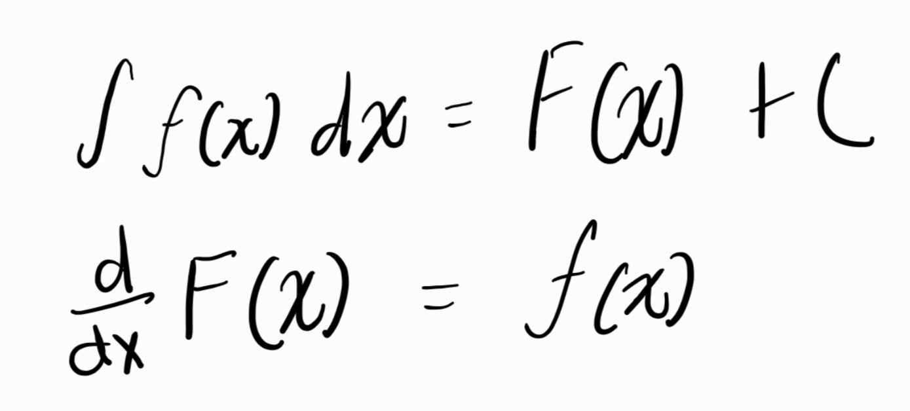

The Area Under The Curve
pretty interesting stuff here, could make that title into a horror movie💀
Integration is a method to add a bunch of small parts to find the whole. It is also called the antiderivative. An integral undoes the derivative.
There are two types of integrals:
-Definite integrals (Gives us change within two bounds) in terms of derivatives, it gives us the particular solution to the integral:

-Indefinite Integrals (Integral without bounds) this one gives us the general solution (no specific graphical way to show it):
Riemann Sums
When taking the definite integral, we are basially finding the area under the graph between the output of the function and the x-axis. Functinons are often graphed in shapes that we dpont have area formulas for. This is where the Riemann sum method comes in. This method splits the area up into rectangles (a shape we DO know the area formula for!!)

There are two types of riemann sums
-Left hand Riemann sums

-Right hand Riemann sums

Estimates
Our estimate can vary from being an over or an underestimate based on the shape of the graph. Generally, if we are using a left sum and the graph is increasing then it is an underestimate and if the graph is decreasing then it is an over estimate. If using a right sum and graph is increasing it is an overestimate and if graph is decreasing its an underestimate. Don't waste braincells memorizing these... It is pretty easy to tell by looking at the graph and or just visualizing it.
So how do you take Riemann sums? Well since they are just a bunch of rectangles all you do is take each individual rectangle's area and then add them all up! I sure hope you know what the area formula for a rectangle is. Its base*height. The interval chosen/given in the question is your base and the height is the output of your function. (This will come in handy when you are looking at only tables or input/outputs and have no graphs at hand to visualize.)
Ways to Make the sums Accurate-er
Midpoint Sums: The rectangles are split the same way but when adding we use the height at the midpoint in the interval instead of one of the endpoints
Trapezoidal sums: This shape fits the curve more closely.

for this too we take the individual areas of each trapezoid and add them all together. Area formula for a trapezoid is 1/2(b1+b2)(h). We take the height as the distance between the endpoints on the interval. The bases are the endpoints on the interval.
Riemann Sums from Tables
On the test most of the time we have to take Riemann sums from a table. Here I'll have one example of each of the methods:

As you can see the intervals are not even here. The base for each rectangle will be different. We will find that by subtracting the two points (2-0) and then multiplying by the height. When we group them we can see we have 4 intervals, therefore we will have 4 terms in our Riemann sums.
Left sum:
(2-0)(1) + (3-2)(10) + (7-3)(14) + (9-7)(16) we get the base of the rectangle by subracting the two x values in the interval. The height is the left most endpoint since it is the left sum.
Right Sum:
(2-0)(10) + (3-2)(14) + (7-3)(16) + (9-7)(21) here we get our base the same way but choose our heights to be the right most endpoint in the interval as it is the right sum.
Midpoint Sum:
(2-0)(4.5) + (3-2)(2) + (7-3)(
Trapezoid Sum:
(1/2)(10+1)(2-0) + (1/2)(14+10)(3-2) + (1/2)(16+14)(7-3) + (1/2)(21+16)(9-7) The bases are added which are the heights in the interval, and the interval is the height of the trapezoid.
Integrals
finally we actually got to what this unit is about...
There are a bunch of rules for integration just like in differentiation.
The integral undoes the derivative. F(x) is the original function. The f(x) is the integrand. The dx represents the variable we are integrating with respect to. The +C symbolizes the general solution. Since constants' derivatives are 0 we could have any possible constant there so instead we put in the general placeholder +C. Therefore +C represents the family of infinitely many functions whose integral is in that form.